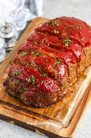

Sweet and Sour Meatloaf
Home

Description
Our family loves this meatloaf! It's covered with a tangy sweet and sour sauce made on the stove. It is very good!
Ingredients
- 1.5 pounds ground beef
- 1 cup dry bread crumbs
- 1 teaspoon salt
- ¼ teaspoon ground black pepper
- 2 eggs
- 1 teaspoon dried minced onion
- 1 (15 ounce) can tomato sauce
- 2 tablespoons brown sugar
- 2 tablespoons cider vinegar
- ½ cup white sugar
- 2 teaspoons prepared mustard
Steps
- Preheat oven to 350 degrees F (175 degrees C).
- In a large bowl, combine the ground beef, bread crumbs, salt, ground black pepper, eggs, onion flakes and 1/2 of the can of tomato sauce. Mix together well and place into a 5x9 inch loaf pan.
- Push the meatloaf down into the pan forming a well for the sauce around all the edges.
- Bake at 350 degrees F (175 degrees C) for 40 minutes.
- Meanwhile, in a small saucepan over medium heat, combine the remaining tomato sauce, brown sugar, vinegar, white sugar and mustard. Bring to a boil and remove from heat.
- After meatloaf has cooked for 40 minutes, remove from oven and pour sauce over the top of the meatloaf.
- Return to oven and bake at 350 degrees F (175 degrees C) for 20 more minutes. Let sit 5 minutes before removing from pan.